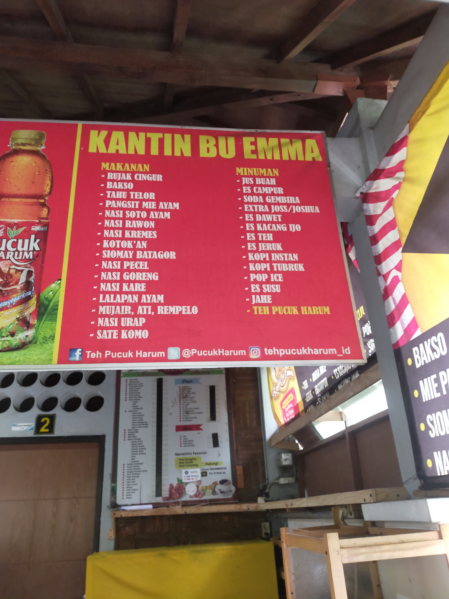
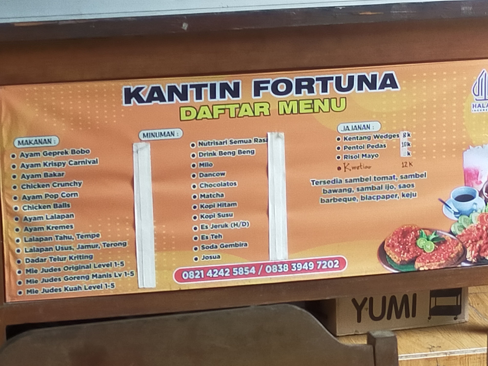
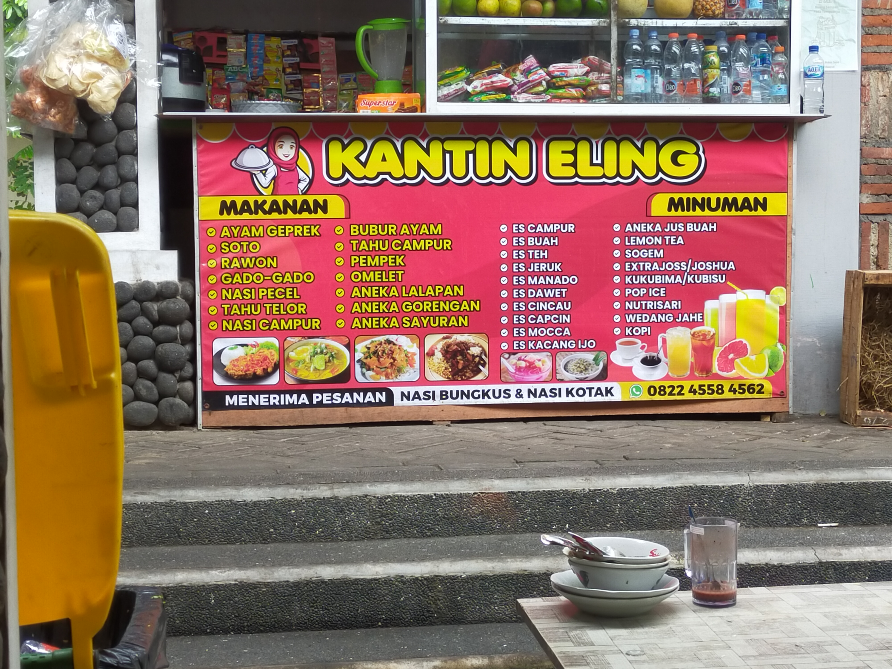

Kantin Bu Emma
Spesialis masakan Jawa dengan rasa yang khas dan otentik.
Lihat Menu 
Kantin Fortuna
Kantin dengan menu variatif dan harga ramah di kantong.
Lihat Menu 
Kantin Eling
Menu sehat dengan berbagai pilihan makanan ringan dan berat.
Lihat Menu